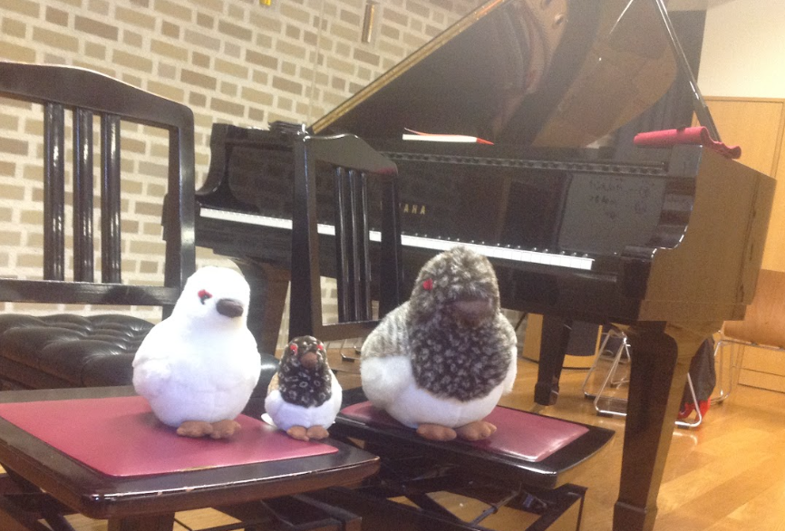

【現在演奏されている曲目】
※5分おきに更新されるため正確でない場合があります
Day1(5月2日)
【第1部】9:15～
- ○1.W.A.モーツァルト:魔笛より序曲
- ○2.J.アッコーライ:ヴァイオリン協奏曲第1番
- ○3.F.クライスラー:コレルリの主題による変奏曲
- ○4.L.ベートーヴェン:ピアノソナタ第8番「悲愴」ハ短調
- ○5.上原ひろみ:カレイドスコープ
- ○6.C.ドビュッシー:映像 第2集より「金色の魚」
- ○7.R.シューマン(アグスティン・バリオス編):トロイメライ
- ○8.F.ショパン:ワルツ第1番 変ホ長調 「華麗なる大円舞曲」
- ○9.B.バルトーク:アレグロ・バルバロ BB.63
- ○10.F.ショパン(パデレフスキ編):スケルツォ第2番変ロ短調
- ○11.F.ショパン:エチュードOp.10-1
- ○12.F.ショパン:幻想即興曲Op.66
- ○13.King gnu:逆夢
- ○14.久保直人(かてぃん編):JumpUp,SuperStar!
- ○15.F.リスト:超絶技巧練習曲 第4番 「マゼッパ」
- ○16.F.リスト:パガニーニ大練習曲第3番嬰ト短調「ラ・カンパネラ」
- ○17.A.ピアソラ(山本京子編):リベルタンゴ
～グリー部の演奏が間に入ります～
【第2部】12:05～
- ○18.F.ショパン:練習曲作品10-12
- ○19.P.チャイコフスキー:眠れる森の美女より薔薇のアダージョ
- ○20.J.S.バッハ:BWV988 ゴルトベルク変奏曲 アリア
- ○21.A.ドヴォルザーク:スラヴ部曲集第1集第8番 ト短調
- ○22.F.J.ハイドン:ピアノソナタ第35番ハ長調Op.30-1 第1楽章
- ○23.F.リスト:3つの演奏会用練習曲「ため息」S.144-3
- ○24.F.メンデルスゾーン:ヴィオラソナタハ短調 第1楽章
- ○25.J.パッヘルベル:3つのヴァイオリンと通奏低音のためのカノンとジーグ
- ○26.C.サン=サーンス:ヴァイオリン協奏曲第3番ロ短調 Op.61 第1楽章
- ○27.G.ガーシュウィン:ラプソディ・インブルー「クラリネットのしらべ」
- ○28.F.シューベルト:幻想曲ハ長調第3,4楽章 D.760
- ○29.S.ラフマニノフ:ピアノ協奏曲第2番ハ短調Op.18
- ○30.J.S.バッハ:G線上のアリア
- ○31.F.メンデルスゾーン:アンダンテとアレグロ・アッサイ・ヴィヴァーチェ
- ○32.F.プーランク:3つのノヴェレッテ 第3曲
- ○33.F.ショパン:バラード1番 ト短調 Op.23
- ○34.F.リスト:メフィストワルツ第1番「村の居酒屋での踊り」
- ○35.F.ショパン:ポロネーズ第6番「英雄」Op.53
- ○36.F.ショパン:舟歌 嬰ヘ長調Op.60
Day2(5月3日)
【第1部】9:15～
- ○1.C.グリーグ:ペールギュントより「朝」
- ○2.L.アンダーソン(編:大宝博):トランペット吹きの休日
- ○3.J.アッコーライ:ヴァイオリン協奏曲第1番イ短調
- ○4.F.クライスラー:コレルリの主題による変奏曲
- ○5.L.ベートーヴェン:ピアノソナタ第8番「悲愴」ハ短調Op.13 第3楽章
- ○6.上原ひろみ:カレイドスコープ
- ○7.C.ドビュッシー:映像 第2集より「金色の魚」
- ○8.R.シューマン(アグスティン・バリオス編):トロイメライ
- ○9.久保直人(かてぃん編):JumpUp,SuperStar!
- ○10.F.ショパン:ワルツ第1番 変ホ長調「華麗なる大円舞曲」
- ○11.F.ショパン:練習曲作品10-12
- ○12.F.ショパン(パデレフスキ編):スケルツォ第2番変ロ短調
- ○13.F.ショパン:エチュード Op.10-1
- ○14.F.ショパン:幻想即興曲 Op.66
- ○15.King gnu:逆夢
- ○16.久石譲:あの夏へ
- ○17.F.リスト:超絶技巧練習曲 第4番「マゼッパ」
- ○18.F.リスト:パガニーニ大練習曲第3番 嬰ト短調「ラ・カンパネラ」
- ○19.V.モンティ:チャルダッシュ
～グリー部の演奏が間に入ります～
【第2部】12:15～
- ○20.レ・フレール:Boogie Back To Yokosuka
- ○21.J.S.バッハ:BWV988ゴルトベルク変奏曲 アリア
- ○22.F.J.ハイドン:ピアノソナタ第35番ハ長調Op.30-1第1楽章
- ○23.B.バルトーク:アレグロ・バルバロ BB.63
- ○24.F.リスト:3つの演奏会用練習曲「ため息」S.144-3
- ○25.F.メンデルスゾーン:ヴィオラソナタハ短調第1楽章 MWV.Q14
- ○26.J.S.バッハ:BWV1043 2つのヴァイオリンのための協奏曲第2楽章
- ○27.C.サン=サーンス:ヴァイオリン協奏曲第3番ロ短調 第1楽章
- ○28.G.ガーシュウィン:ラプソディ・インブルー「クラリネットのしらべ」
- ○29.F.シューベルト:幻想曲ハ長調第3,4楽章
- ○30.J.S.バッハ:G線上のアリア
- ○31.S.ラフマニノフ:ピアノ協奏曲 第2番ハ短調
- ○32.C.ドビュッシー:前奏曲集第2集 第3,8曲
- ○33.F.ショパン:バラード1番ト短調 Op.23
- ○34.F.ショパン:ポロネーズ第6番「英雄」
- ○35.F.ショパン:舟歌 嬰ヘ長調Op.60
- ○36.F.リスト:メフィストワルツ第1番「村の居酒屋での踊り」

【音楽室内でのお願い】
○室内は飲食禁止です
○携帯電話、スマホなどは音をお切りください
○演奏中の出入りはご遠慮ください(曲間の出入りは自由)
○何かご不明の点がございましたら、近くの部員まで